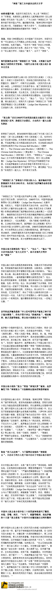

原来朝鲜这种帝王生日都是全国假期的做法源于中国的唐朝 网页链接 封建帝王确定在生日举行大型祝寿活动是始于唐代。唐开元十七年（729）八月，唐玄宗置酒宴招待群臣，庆祝自己的生日。宴会后，尚书左丞相源乾曜（yào）、右丞相张说率文武百官上表，请以玄宗生... 分享自Kindle
曾国藩说每天都要读书 网页链接 我家诸弟，此时无论考试之利不利，无论文章之工不工，总以看书为急务。不然，则年岁日长，科名无成，学问亦无一字可靠，将来求为塾师而不可得。或经或史，或诗集文集，每日总宜看二十页。男今年以来，无日不看书，虽万事丛忙，亦不废正业。 分享自Kindle
说起来我原本对中国古典公案小说的推理不报任何希望，后来听了个郭德纲的评书<命断三更＞（源自＜警世通言＞的＜三现身包龙图断冤＞）觉得这个谜设计得还不错啊，可以推理。如果都这么写就值得一看了。@网易另一面:【“神探狄仁杰”本就来自西方文学】广为人知的“神探狄仁杰”形象本就不是中国土产，而源于荷兰人高罗佩创作的《狄公探案集》。好酷刑问案、鬼神托梦的中国传统公案小说《狄公案》，只能塑造出“青天大老爷”，无法塑造出福尔摩斯式重视逻辑推理和把握细节的“神探”。网页链接 